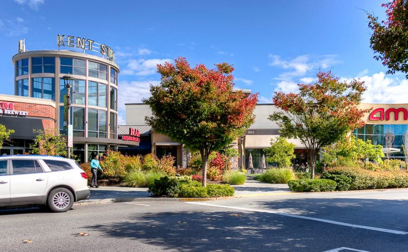

Economic Outlook


The City of Kent has grown and diversified rapidly in the last decade. The third largest city in King County, Kent is centered around a vibrant industrial valley flanked by large residential and commercial service areas on its east and west hills. As the twentieth century saw Kent transform from an agricultural town to a hub of manufacturing and distribution, today City officials and community members are working hard to build on the City’s strengths and position it as an attractive place to live and work for many years to come.
Kent’s central location in the Puget Sound region and wealth of regional infrastructure will continue to support new residents, as well as industrial and commercial transformation. Two interstate highways, a regional rail center, an international airport and two international deep water seaports are located within 20 miles of Kent’s City Hall.
Kent’s central location in the Puget Sound region and wealth of regional infrastructure will continue to support new residents, as well as industrial and commercial transformation. Two interstate highways, a regional rail center, an international airport and two international deep water seaports are located within 20 miles of Kent’s City Hall.
Kent is distinctive in Washington State for its heritage in outer space vehicle research and development as well as a large aerospace manufacturing supply chain. As the historic home of the Kent Space Center, Boeing today employs more than 1,900 individuals in Kent. Blue Origin, a manufacturer of next generation rockets for the government and private commercial operations, today employs more than 1,500 people in Kent with plans to grow to over 3,000 by 2021. A recent space sector study commissioned by Puget Sound Regional Council measured about 3,000 direct jobs in Washington State in the commercial space sector, meaning nearly half the jobs in this growth industry today exist within Kent.
Other large private sector employers in Kent include Amazon, Exotic Metals Forming (aircraft parts manufacturer), REI Inc., Carlisle Interconnect Technologies (electronic component manufacturing) and Alaska Airlines. Kent is also home to wide assortment of food manufacturers and distributors including one of Starbucks only five coffee roasting plants in the world, Oberto Sausage manufacturing and Sysco Seattle (food distribution). Kent also possesses a diverse array of financial and business service companies, entertainment and retail offerings like the accesso ShoWare Center and Kent Station and is a governmental center with regional facilities like the King County’s Maleng Regional Justice Center, which employs more than 600 people in downtown Kent.
Evolving technologies are impacting Kent’s industrial sectors, including commercial space travel and transport, manufacturing, and global trade/supply chain management; opening the door to enormous opportunities in the Kent Industrial Valley. This “fourth industrial revolution” has created an opportunity for Kent to pause and reexamine its industrial land policies.
In 2018, the City began a comprehensive, multijurisdictional examination of zoning limitations and land use policies that have historically prevented the integration of commercial/retail, residential and office uses with modern industrial uses in the Kent Valley. This subarea planning effort, known as Rally the Valley, will help to identify and outline strategies to capitalize on opportunities and establish a vision for the future of the Kent Valley industrial and manufacturing lands. It will analyze existing infrastructure and other resources and identify those which are needed to support growth in key industries that underpin Kent’s economic vitality.
In addition to this broader policy modernization, Kent is working to revitalize its outdated commercial areas. A current effort know as Meet Me on Meeker is rebuilding the Meeker Street commercial corridor which connects Kent’s historic downtown to a planned regional light-rail station on the city’s West Hill. Planning for this effort was recognized with the Washington Governor’s 2018 Smart Communities Award for achievement in creating thriving communities, a prosperous economy and sustainable infrastructure.
Meeker Street is a classic example of a former main street that has experienced decline caused by disinvestment, decay and high-speed vehicle traffic. By establishing smaller blocks, creating a safe and welcoming environment for bicyclists and pedestrians, raising the standard of urban design and slowing vehicle traffic, this project reimagines Meeker Street as an attractive urban amenity. The Meet Me on Meeker project capitalizes on exciting private development projects that together with public investment, are transforming this high-profile corridor. It represents a new strategic direction for the City of Kent and is a signal to developers and the region that Kent is an attractive place for people and worth caring for.
Kent employment and income statistics are shown below.
Employment
Occupations
Type of Workers
Industries
Income and Benefits
Housing
The largest share of households have a property value in the $200k-$300k range. The median property value is $225k.